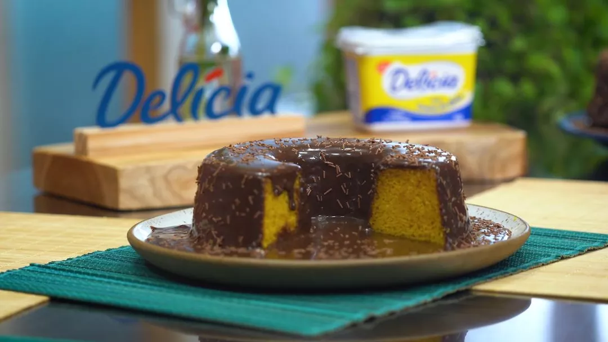

Bolo vulcão de cenoura com brigadeiro
Aprenda a fazer esta deliciosa receita com cheirinho de lembrança de vó

- 2 xícaras de farinha de trigo
- 1 colhar de sopa de fermento em pó
- 3 cenouras médias picadas
- 2 xícaras de chá de açúcar
- 4 ovos
- 1 xícara de margarina com sal